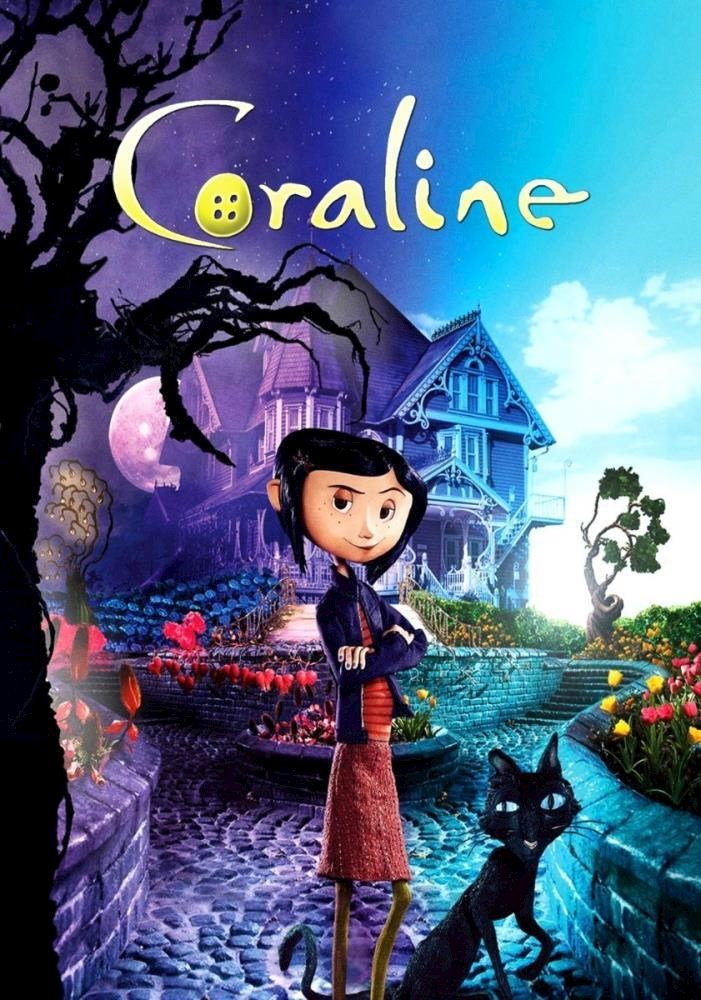

Coraline
An adventurous girl walks through a secret door in her new home and discovers a strangely idealized version of her frustrating home, but it has sinister secrets.
An adventurous girl walks through a secret door in her new home and discovers a strangely idealized version of her frustrating home, but it has sinister secrets.
Lewis, a brilliant young inventor, is keen on creating a time machine to find his mother, who abandoned him in an orphanage. Things take a turn when he meets Wilbur Robinson and his family.